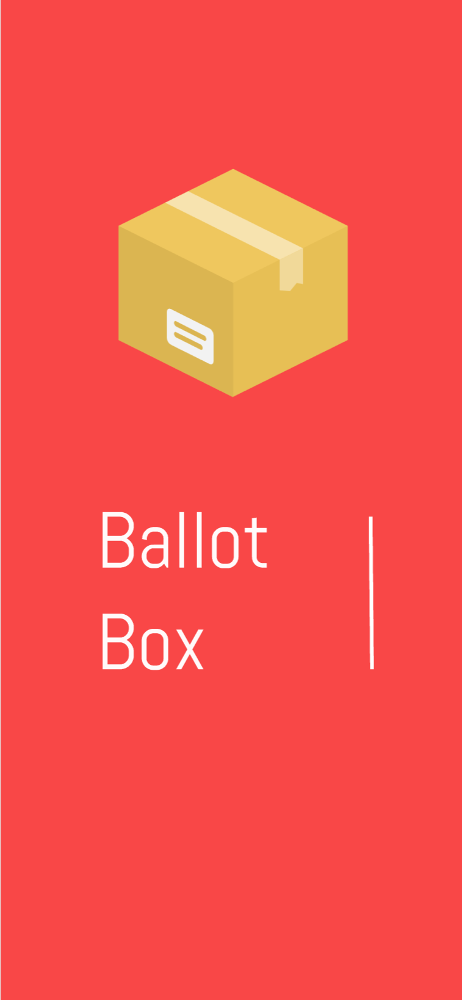
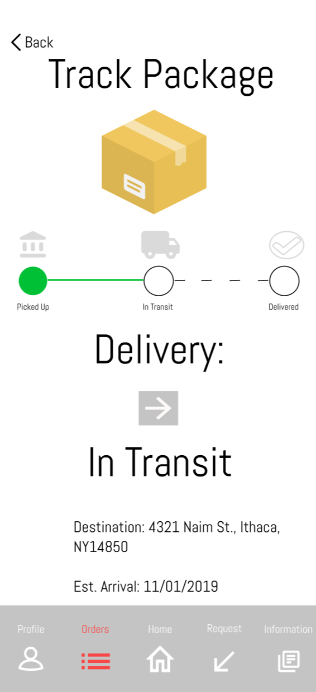
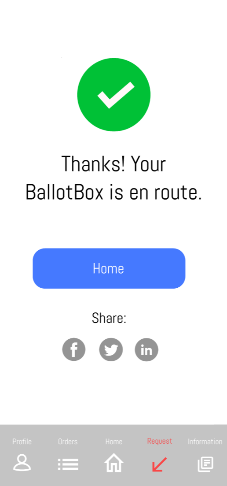

Ballot Box
- 
- 
- 
Ballot Box was a project I worked with a group of four other individuals. Our goal for this project was to create a solution to a problem that many college students face, using a human centered design process. The problem our group decided to address was the difficulties associated with out of state voting for college students. To solve this problem each group member came up with 20 original, nonexistent ideas (100 ideas total). From 100 ideas our group concluded that some form of mobile application would be the optimal method for solving this problem. Designing the mobile application takes a lot of steps. Initially, we had to define tasks, so the users knew what they wanted to do with our app. After defining the tasks, my group members and I separated the tasks by screen, where each group member sketched out the design of the screens associated with the task. Our group then moved on to create a rough prototype using balsamiq. After testing the interactivity with users my group refined our design based on the participants’ feedback. Following the user tests and feedback, my group transitioned into making a prototype using Figma software. After revising the balsamiq prototype by creating a new figma prototype, my group was allowed to do another set of user tests where we further revised our design. The final product is Ballot Box. Ballot Box is an app that allows individuals to request voting materials (voter’s registration, balloting materials) to their door. After they completely fill out their forms, Ballot Box enables them to request for these items to be picked up, mailed off, and successfully vote in an out of state election.